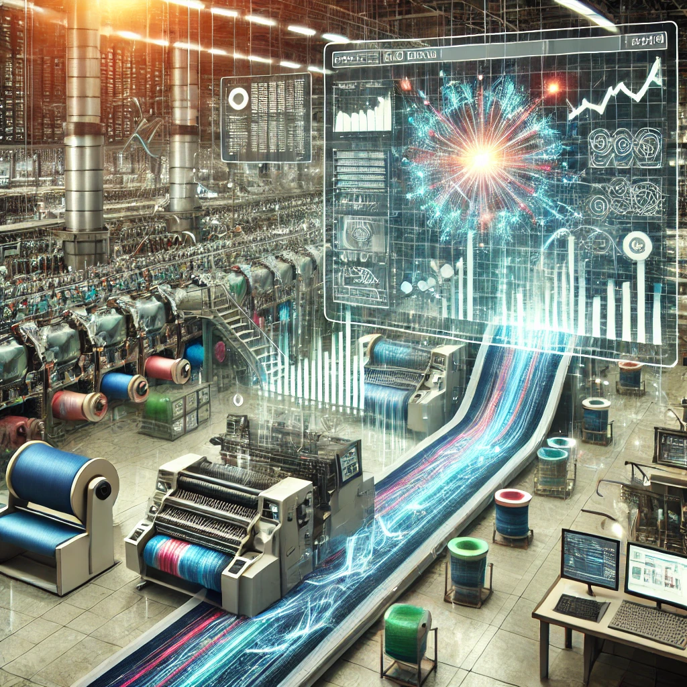
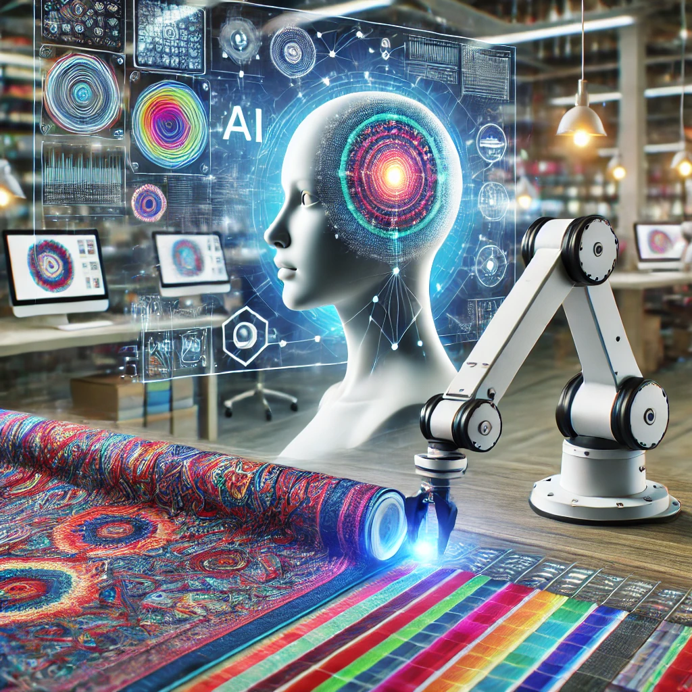

Overview of Digital Transformation
In the evolving digital landscape, digital transformation plays a pivotal role in modernizing the textile industry. This section explores the impact of digital advancements on operational efficiency, product innovation, and market competitiveness.
Cloud Computing
Cloud computing has revolutionized how textile businesses manage their IT infrastructure. For smaller textile companies, cloud-based solutions offer scalability and cost efficiency without the need for significant upfront investments, streamlining operations such as inventory management and customer relationship management.
Internet of Things (IoT)
The Internet of Things (IoT) enables connectivity between devices, enhancing automation and real-time monitoring in textile manufacturing. IoT devices can track environmental conditions like temperature and humidity, ensuring consistent product quality and reducing waste.
Artificial Intelligence (AI)
Artificial Intelligence (AI) is transforming textile operations by automating design processes, optimizing production efficiency, and improving quality control. AI-driven tools also provide valuable insights into consumer trends, helping businesses tailor their offerings to meet market demand.
Big Data Analytics
Big data analytics in the textile industry enables the processing of vast amounts of data from various sources, such as sales metrics and customer feedback. This analysis helps optimize production schedules, reduce waste, and improve product quality while also providing insights for better inventory management and customer satisfaction.
Digital Twins

Digital twins create virtual replicas of textile production processes, allowing businesses to monitor performance, predict outcomes, and optimize operations in real-time. By simulating production scenarios, companies can test new designs, optimize workflows, and accelerate time-to-market for new products.